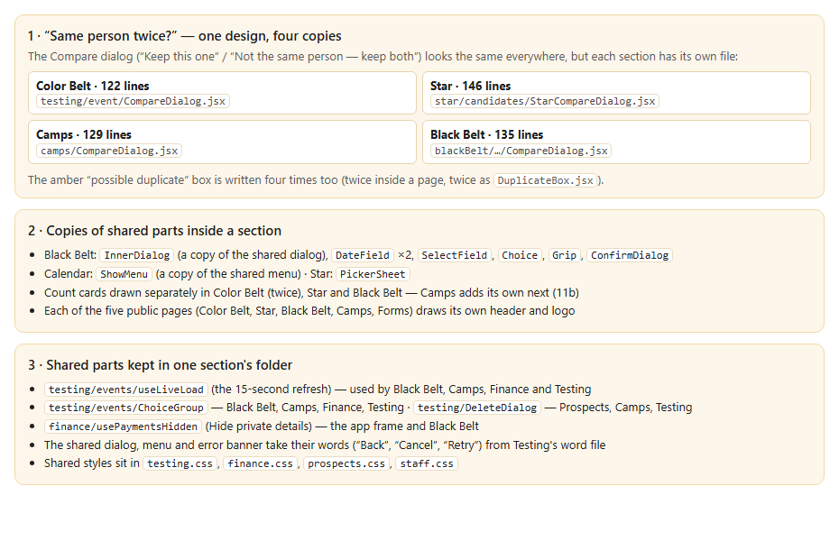
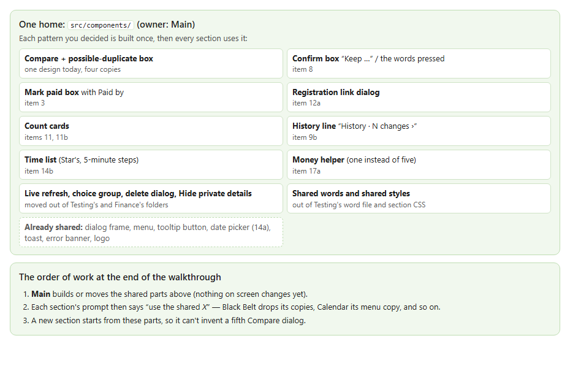

Drift you can't see yet. The Grandmaster never sees this, but it is why designs drift: when the same thing is written four times, a fix in one copy misses the other three. It matters now because most of this walkthrough's decisions (the confirm box, Mark paid, the registration link, count cards, the time list, the money helper…) would otherwise be built once per section. Two things stay as they are: the “possible duplicate” words differ only by each section's noun (“registered twice” / “signed up twice”), which already matches 12b; and Prospects has no duplicate check by decision (v0.244). (Code checked 2026-10-23, after merging main)

